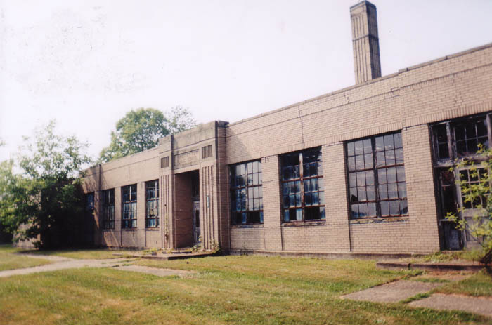

This abandoned school was a bit of a mystery to me when I first visited it. All I knew was that it exists on a country highway in southwestern Belmont County--Somerset Township, near Temperanceville, which is south of Barnesville.
Whenever I take a trip through Ohio I try to use the backroads as much as possible to increase my chances of discovering something like this. On this particular trip I was pretty much lost in the hills of the Ohio Valley and just happened to see an abandoned school building sitting on the most rural country road imaginable.
Despite its obvious problems the building is pretty nice-looking for such an obscure location. Two decorative pine trees flank the main entrance. The sidewalk which leads up to the front door ends at the road because there aren't any others for it to connect to. Kids who went to school here had to walk in the road or across the fields.
When did kids go to school here? It turns out that it operated between 1940 and 1970. Until 1951 it housed all grades, including a high school with graduating classes of 12-20 people. Then it functioned as an elementary school until it closed its doors for good. The carved sign above the door gives the school's name but no other clues; this information was sent to me.

The inside of the Somerset Township school is in sorry shape. The window glass is long gone and you can see into old classrooms and offices which still contain a desk or two but have mostly been destroyed or soaked black by the elements. Below you can see office doors and the built-in counter of what I assume was a science classroom.
In some places the school is completely falling apart, especially in the back where some of the maintenance stuff was. The roof of the single-story building has caved in at many points.
The Somerset Township Public School is no longer public at all but is owned by the guy whose property it borders on. He has stacked enormous rubber tires out back and even parks his trucks and construction equipment in the big custodial garage bay at the rear of the building. When I was there he came over and I talked to him briefly--mainly just to get permission to shoot a few pictures. I didn't get to go inside but after snapping pictures through the windows on every side I don't think I could have missed much.
This school is a fascinating bit of history from a very rural part of eastern Ohio. If anyone knows anything more about the place I'd love to hear from you so we can maybe fill in some of the blanks about its history. Certainly schoolkids must have come here for years and had recess and lunch and Christmas plays and soccer games here. If you were one of them, drop me a line.
Back
forgottenohio@yahoo.com